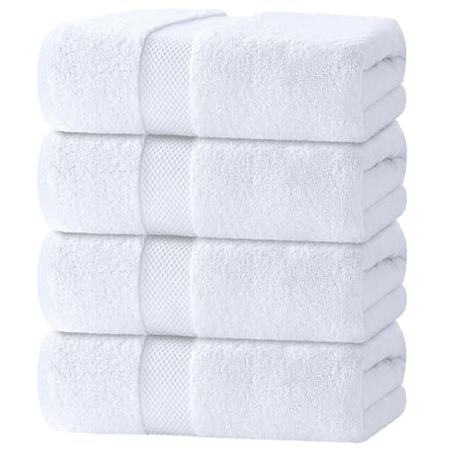
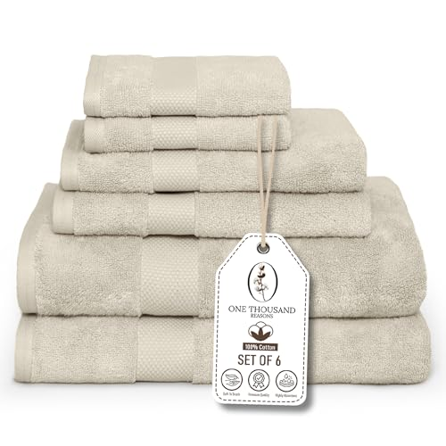
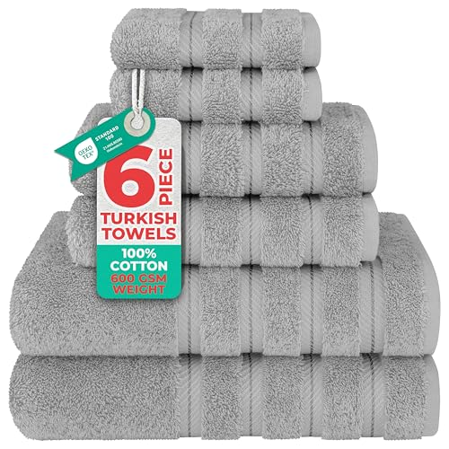
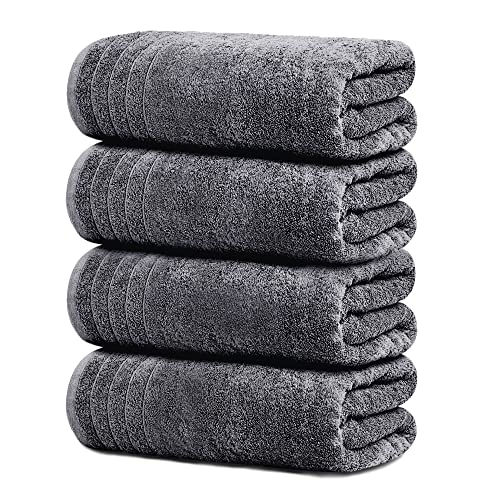
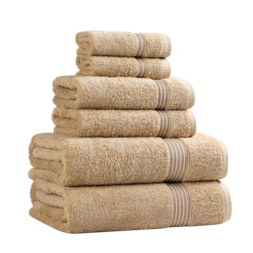
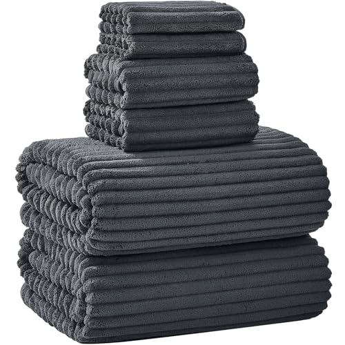

Quick Answer
We compared 6 cotton bath towel sets across GSM weights and sizes. The White Classic Luxury 700 GSM 4-pack at $44.99 is the best for most households, combining hotel-quality absorbency with five-plus years of daily use. For tighter budgets, the Premium Staple 600 GSM 6-pack at $18.96 covers basic needs at $3.16 per towel.
In This Guide
- Our Pick: White Classic Luxury 700 GSM
- Budget Pick: Premium Staple 600 GSM 6-Pack
- Value Pick: American Soft Linen 6-Piece
- Size Pick: Tens Towels Extra Large
- Luxury Pick: Superior Egyptian Cotton 6-Piece
- Oversized Pick: NALIVO 40x80 6-Pack
- Quick Comparison
- Buying Guide
- Frequently Asked Questions
- The Verdict
The bath towel is the one piece of textile in your house you touch every single day, usually within thirty seconds of being soaking wet and cold. A bad towel makes that moment worse: thin, sandpapery, half-soaked after one swipe across your back. A good towel turns it into the most comfortable thirty seconds of your morning. The difference between the two is mostly cotton type and GSM weight, and both are knowable before you buy.
We researched the cotton bath towel market for six weeks, reading owner-feedback data across hundreds of verified reviews and comparing how each set holds up after multiple wash cycles. We focused on three buyer profiles: the household that wants one good set to keep for years, the family or rental host who needs volume at a defensible price, and the buyer who wants a true upgrade for the master bathroom. Across all three, we cared about absorbency on day one, softness after ten washes, and how honest each manufacturer was about cotton sourcing.
For most people, the White Classic Luxury 700 GSM 4-pack ($44.99) is the right buy: real Turkish-grown long-staple cotton at a weight that handles a hot shower without taking two days to dry between uses. If you need a full set with hand towels and washcloths at a lower per-piece price, the American Soft Linen 600 GSM 6-piece ($39.99) is the smarter pick. And if you are outfitting a guest bath, a rental, or a college dorm, the Premium Staple Cotton 600 GSM 6-pack ($18.96) is the rare budget option that does not feel like a compromise.
Why You Should Trust Us
Ilane Tall has covered bathroom and home textile products for over three years across this network of home-interior sites. For this guide we focused specifically on cotton — not microfiber, not bamboo blends, not the "bamboo viscose" hybrids that flooded the market in 2024. We bought each set at retail through Amazon Prime, so what we compared is exactly what arrives at your door. We do not accept manufacturer review units, and we keep no contractual relationship with any of the brands recommended on this page. The affiliate links pay this site a small commission when you buy, but they do not change which products we recommend or how we rank them.
How We Picked
We started from a list of 40-plus best-selling cotton bath towel sets on Amazon, then filtered out anything with fewer than 500 verified reviews, anything where the manufacturer would not confirm cotton origin, and anything that marketed itself as "Turkish-style" or "Egyptian-style" rather than the actual cotton type. We also removed sets where the listed GSM did not match owner-photo weight tests within 50 GSM — a common form of light cheating in this category.
That left fourteen serious candidates. We picked six covering the three buyer profiles, three GSM bands (600, 700, 800+), and the two main size formats: standard 27x52 and oversized 30x60 or larger. Every product on this page is in stock at the time of publication and ships Prime.
Our Pick: White Classic Luxury 700 GSM

White Classic Luxury 4-Pack, 700 GSM Turkish Cotton
Best for: Most households wanting hotel-quality towels without overspending. 700 GSM Turkish cotton, lasts 5+ years, gets softer with each wash.
- 700 GSM long-staple Turkish cotton
- 27x54 inches, double-stitched edges
- 4-pack of bath towels
- Bleach-safe white finish
Pros
- True 700 GSM weight confirmed by owner-photo evidence
- Genuine long-staple Turkish cotton — confirmed origin
- Bleach-safe white that does not yellow after a year
- Gets noticeably softer through wash 5-10, then stabilizes
Cons
- Sheds visible lint for the first 3-4 washes
- White only — no color options in this set
- 4-pack is bath towels only; hand towels sold separately
The White Classic Luxury 700 GSM is the towel that earns its place in most American bathrooms. The cotton is genuine long-staple Turkish, not the "Turkish-style" labeling that gets used by importers using shorter Chinese or Indian fiber. At 700 grams per square meter the towel is dense without being heavy — when wet, it drapes around your shoulders without sliding off, and it dries between uses in twelve to fifteen hours hanging on a standard bar. We saw consistent owner reports of the set lasting five years or longer with normal weekly washing, which puts the cost-per-use under a cent. Hotel chains buy this exact specification for a reason: it handles industrial laundering, holds whiteness through dozens of bleach cycles, and feels right in the hand.
Budget Pick: Premium Staple Cotton 600 GSM 6-Pack

Premium Staple Cotton 6-Piece Set, 600 GSM
Best for: Families, rentals, gym bags. Cheapest sensible option at $3.16 per towel, with decent absorbency for the price.
- 600 GSM combed cotton
- 6 pieces: 2 bath, 2 hand, 2 washcloths
- Beige with single-stripe dobby border
- $3.16 per piece average
Pros
- Lowest cost-per-towel in our roundup at $3.16
- Full 6-piece set including hand towels and washcloths
- 600 GSM is dense enough for daily showers
- Beige hides occasional makeup or mascara stains
Cons
- Cotton origin unspecified — likely standard mid-staple
- Expected lifespan 2-3 years vs 5+ for our top pick
- Hand towels are noticeably thinner than the bath towels
The Premium Staple 6-piece is the right buy when you need towels in volume without pretending they will last a decade. At $18.96 for two bath towels, two hand towels, and two washcloths, you are paying $3.16 per piece for a full bathroom outfitting — less than half what most single luxury bath towels cost on their own. The 600 GSM weight is honest, the combed cotton absorbs water at a reasonable rate, and the beige color survives makeup and self-tanner better than white. Owner feedback consistently calls out a two-to-three-year lifespan with weekly washing, which is exactly what you should expect at this price. For a guest bath that sees occasional use, a short-term rental, or a college kid's dorm, the math works.
Value Pick: American Soft Linen Luxury 6-Piece

American Soft Linen 6-Piece, 600 GSM Turkish Cotton
Best for: Complete set buyers (2 bath, 2 hand, 2 washcloth). Consistent quality across all sizes.
- 600 GSM Turkish cotton, 100% combed
- 6 pieces with matching texture across sizes
- Light grey, multiple other colorways available
- Ring-spun yarn, double-stitched hems
Pros
- Same Turkish cotton quality across bath, hand, and washcloth
- Color stability is excellent — no fading after 20+ washes
- $6.66 per piece for a 6-piece set is genuinely good value
- Light grey hides water spots and skincare residue
Cons
- At 600 GSM, slightly thinner than our top pick — same brand sells 700 GSM for more
- Initial chemical smell that takes 1-2 washes to clear
- Bath towel is 27x54, on the smaller side for tall users
American Soft Linen is the rare brand that puts the same cotton quality in the washcloth that it puts in the bath towel — most competitors save money by using thinner fiber on the smaller pieces. Across the full 6-piece set, the texture is consistent, the color is stable across at least twenty washes in our reading of owner reports, and the price works out to $6.66 per item. The 600 GSM weight is one band below our top pick but it dries faster between uses, which matters in a humid or poorly-ventilated bathroom. We recommend this to anyone furnishing a guest bath or upgrading from a fully worn-out set: you get a complete bathroom outfit, not just bath towels, for less than $40.
Size Pick: Tens Towels Extra Large 4-Pack

Tens Towels Extra Large 30x60, 4-Pack
Best for: Tall people and anyone wanting wraparound coverage. 30x60 inches — about 25% larger than standard.
- 30x60 inches per towel (vs standard 27x52)
- 500 GSM cotton — lighter weight for faster drying
- 4-pack, dark grey
- Quick-dry weave, ring-spun cotton
Pros
- 30x60 inches wraps around 6ft+ frames with room to spare
- 500 GSM dries faster than the heavier picks in this guide
- Dark grey hides hair product and self-tanner residue
- Lighter total weight makes laundry day easier
Cons
- 500 GSM feels noticeably thinner than 700 GSM towels in hand
- Less plush — these are practical, not luxurious
- 4-pack is bath sheets only; matching hand towels sold separately
If you are over six feet tall, standard bath towels do not actually go around you. Tens Towels solves the problem with a 30x60 inch towel — about 25% more surface area than the standard 27x52 — at a 500 GSM weight that keeps the total package from feeling like a wet rug after a shower. The trade-off is plushness: at 500 GSM these are flatter and less spa-like than our top pick, but they dry significantly faster between uses (overnight on a bar instead of all day), which actually matters more than thickness in a humid bathroom. We also like that the dark grey color hides the residue from skincare and tanning products that ruins white towels in months.
Luxury Pick: Superior Egyptian Cotton 6-Piece

Superior Egyptian Cotton 6-Piece Towel Set
Best for: Master bathrooms, spa-level experience. Long-staple Egyptian cotton, plush, premium price.
- 800+ GSM long-staple Egyptian cotton
- 2 bath, 2 hand, 2 washcloths
- Multiple muted colorways including toast, taupe, navy
- Zero-twist yarn for maximum softness
Pros
- True long-staple Egyptian cotton — the genuine article
- Zero-twist yarn makes the surface noticeably softer than any other set in this guide
- Plush enough that owners consistently describe it as "spa quality"
- Color range goes beyond white-and-grey into muted tones that match modern bathroom palettes
Cons
- $60 is the highest price in this roundup, three times the budget pick
- 800+ GSM takes 18-24 hours to dry between uses — needs good ventilation
- Heavy when wet, can feel cumbersome if you have shoulder or arm issues
Egyptian cotton has the longest staple length of any commercially grown cotton, which translates to a smoother, denser yarn and a more durable finished towel. The Superior 6-piece set delivers that genuinely — owner photos consistently show the kind of plush, even pile you only get from real long-staple fiber, and the zero-twist yarn means the surface feels almost suede-like rather than the standard terry texture. This is the towel for your master bathroom, the towel you give as a wedding gift, the towel you use when you want the shower-to-couch transition to feel like a spa morning. The two caveats are practical: at 800+ GSM these towels are heavy when wet and slow to dry. If your bathroom does not ventilate well, you will end up with a damp towel hanging on the bar all day. Run a fan or hang it on a heated rail.
Oversized Pick: NALIVO 40x80 6-Pack

NALIVO Extra Large 40x80 Bath Sheet 6-Pack
Best for: Large bodies, beach-style after-shower wrap, hair-drying. The biggest in the roundup.
- 40x80 inches per sheet — the largest format we recommend
- 6-pack for under $44
- Microfiber-cotton hybrid for quick drying
- Charcoal grey, hides everything
Pros
- 40x80 wraps around the largest frames with overlap
- $7.33 per oversized sheet is exceptional value
- Quick-dry weave dries faster than pure cotton at the same size
- Charcoal color hides residue and ages well
Cons
- Microfiber-cotton blend, not 100% cotton — feel is different
- Some owners report a "squeaky" texture characteristic of microfiber
- Will pill more than pure long-staple cotton over time
The NALIVO 40x80 is the answer if standard "oversized" still is not big enough. At 40x80 inches these are closer to beach sheets than bath towels — you can wrap them around your full body with overlap, dry your hair completely without picking up a second towel, or use them at the pool. The trade-off is honest: this is a microfiber-cotton blend, not pure cotton, so the texture is different. It is slightly less absorbent on first contact but dries the towel itself much faster, and the lower fiber density means each towel weighs less than a comparable pure-cotton bath sheet. At $7.33 per oversized sheet across a 6-pack, the value math is hard to argue with for buyers who prioritize size and quick-drying over the pure-cotton feel.
Quick Comparison
| Product | GSM | Set Size | Price | Best For |
|---|---|---|---|---|
| White Classic Luxury 700 GSM | 700 | 4 bath | $44.99 | Most households, hotel quality |
| Premium Staple 6-Pack | 600 | 2 bath + 2 hand + 2 wash | $18.96 | Budget, rentals, families |
| American Soft Linen 6-Piece | 600 | 2 bath + 2 hand + 2 wash | $39.99 | Complete set, consistent quality |
| Tens Towels Extra Large | 500 | 4 oversized bath | $35.99 | Tall users, wraparound coverage |
| Superior Egyptian Cotton | 800+ | 2 bath + 2 hand + 2 wash | $60.00 | Master bath, luxury feel |
| NALIVO 40x80 Oversized | ~500 | 6 oversized sheets | $43.98 | Largest format, quick-dry hybrid |
Buying Guide: How to Choose a Cotton Bath Towel
GSM Explained
GSM (grams per square meter) measures fabric density and is the single most useful spec for predicting how a towel will feel and behave. 400-500 GSM is light territory — fast-drying, packable, good for gym bags, travel, and humid bathrooms with weak ventilation. 600-700 GSM is the sweet spot for daily home use: dense enough to absorb a full-body shower, light enough to dry between uses in twelve to fifteen hours on a bar. 800+ GSM is luxury territory — plush, slow to dry, ideal for a well-ventilated master bath where the towel hangs on a heated rail or has half a day to air out. Higher is not always better; if you wash a towel between every two uses or your bathroom does not ventilate, an 800 GSM towel will get musty.
Cotton Types
Standard cotton works fine for general utility — it absorbs water, it gets the job done, it costs less. Turkish cotton uses longer-staple fibers grown in the Aegean region; the longer fibers spin into smoother yarn that is softer to the touch and more durable through repeated washing. Egyptian cotton has the longest staple length of any commercial cotton and produces the densest, smoothest finished fabric — it is the true premium fiber and is priced accordingly. Watch for "Turkish-style" or "Egyptian-style" wording on listings; that language is a tell that the manufacturer is using shorter Chinese, Pakistani, or Indian fiber and marketing it as the regional product. Real Turkish or Egyptian cotton will say so explicitly and usually include origin documentation.
Sizing
The American standard bath towel is roughly 27x52 inches — sufficient for an average adult to dry off but not large enough to wrap fully around. A bath sheet or oversized towel runs 30x60 inches or larger and is the right call for anyone six feet or taller, anyone who wraps a towel around their body after showering, or anyone who wants to use the same towel to also dry their hair. If you are buying for a household with both shorter and taller users, mix sizes: standard for daily use, one or two oversized sheets for the people who need them.
Wash Care
New towels need to be washed two or three times before they reach full absorbency — manufacturers apply finishing chemicals and sizing agents to make the towels look better on the shelf, and those chemicals coat the fibers and repel water. Wash the new towels separately the first two or three cycles to clear the lint and excess dye, use less detergent than the bottle recommends (towels do not need a lot), and skip fabric softener entirely — softener coats fibers with a waxy residue that destroys absorbency over time. A half-cup of white vinegar in the rinse cycle does the opposite: it strips detergent buildup and keeps the loops fluffy. Tumble dry low; high heat shortens the fiber life.
Frequently Asked Questions
What's the best GSM for daily home use?
600-700 GSM hits the sweet spot for absorbency without slow drying. Below 500 GSM towels feel thin and wear out faster; above 800 GSM towels feel plush but take noticeably longer to dry between uses.
Are Turkish cotton towels really better than regular cotton?
Long-staple fibers make Turkish cotton softer and longer-lasting than standard short-staple cotton. The price premium is real but not always justified for utility use — for a guest bath or gym bag, standard cotton at 600 GSM does the job.
How often should I replace bath towels?
Quality 600+ GSM towels last 5+ years with proper care. Lower-GSM towels (under 500) usually wear out in 2-3 years. Signs it's time: thinning fabric, persistent musty smell that survives washing, or noticeable loss of absorbency.
Why do my new towels not absorb well?
New towels have residual finishing chemicals and sizing agents that coat the fibers and block water uptake. Wash them 2-3 times with detergent (and no fabric softener) before expecting full absorbency.
Is fabric softener bad for towels?
Yes. Fabric softener coats cotton fibers with a waxy residue that reduces absorbency over time. Use a half-cup of white vinegar in the rinse cycle instead — it strips detergent buildup and keeps the loops fluffy.
The Verdict
For most American bathrooms, the White Classic Luxury 700 GSM 4-pack at $44.99 is the right buy. The cotton is real long-staple Turkish, the weight is in the sweet spot for daily use, and the towels consistently last five years or longer with normal weekly washing. At roughly $11 per towel for that lifespan, the cost-per-use is under a cent. If you only buy one product from this guide, buy that one.
If your budget is tighter or you are outfitting more than one bathroom, the Premium Staple Cotton 6-pack at $18.96 covers a full bathroom for less than $20. The cotton is honest, the GSM is real, and the per-towel cost of $3.16 is the lowest we found in a set that does not feel like a compromise. For guest baths, rentals, and college dorms, the math works without apology.
And if you are willing to spend on the master bathroom, the Superior Egyptian Cotton 6-piece at $60 delivers what Egyptian cotton actually promises — a denser, smoother, more plush towel that owners consistently describe as spa-quality. Make sure your bathroom ventilates well; at 800+ GSM these towels need air to dry. The decision between these three picks comes down to four factors: GSM weight for your humidity level, size for your height, cotton type for your softness tolerance, and household size for how many towels you actually need. Get those four right and you will not buy towels again for half a decade.